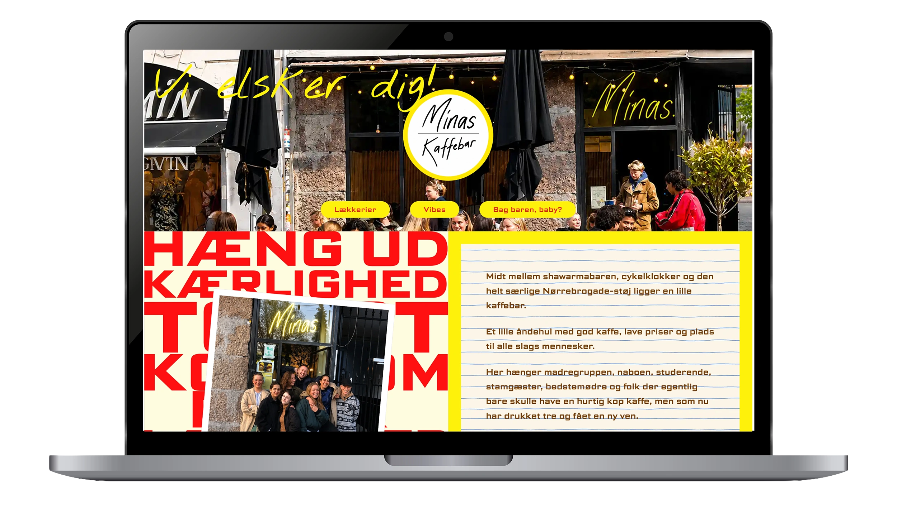
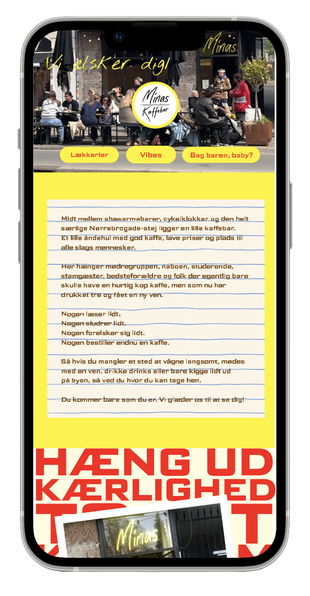
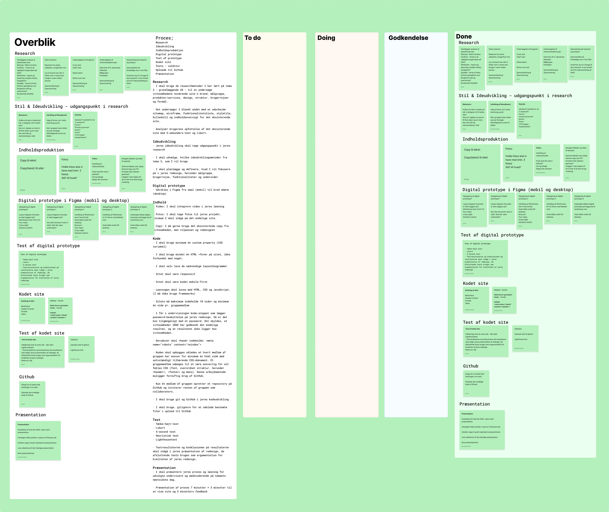
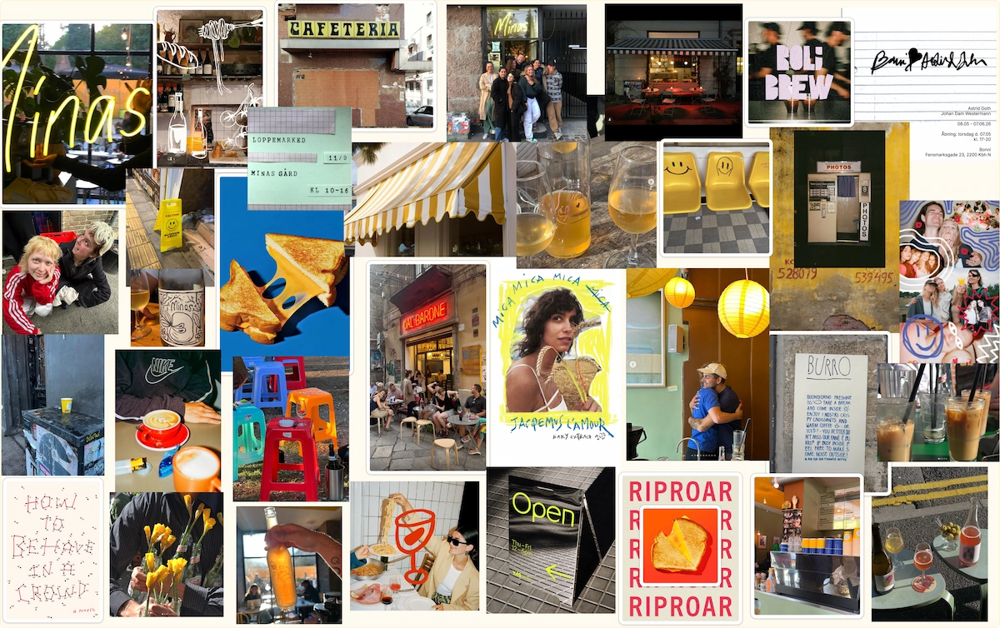
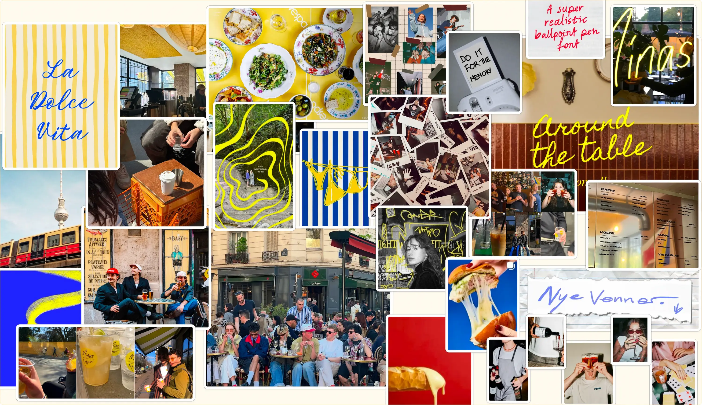
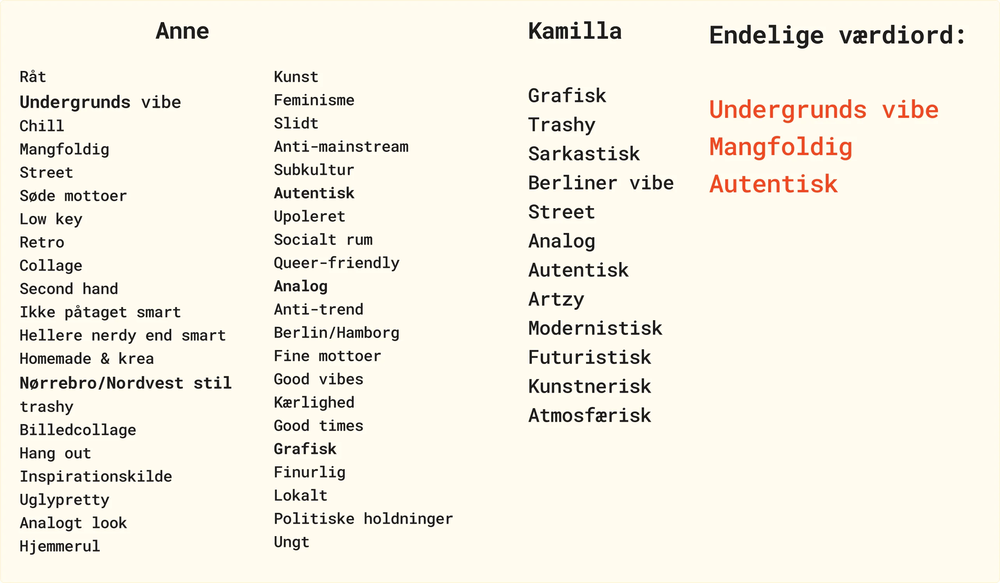
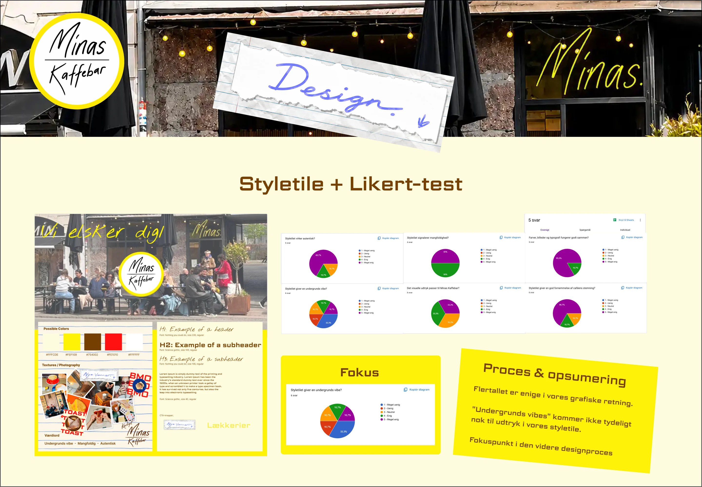
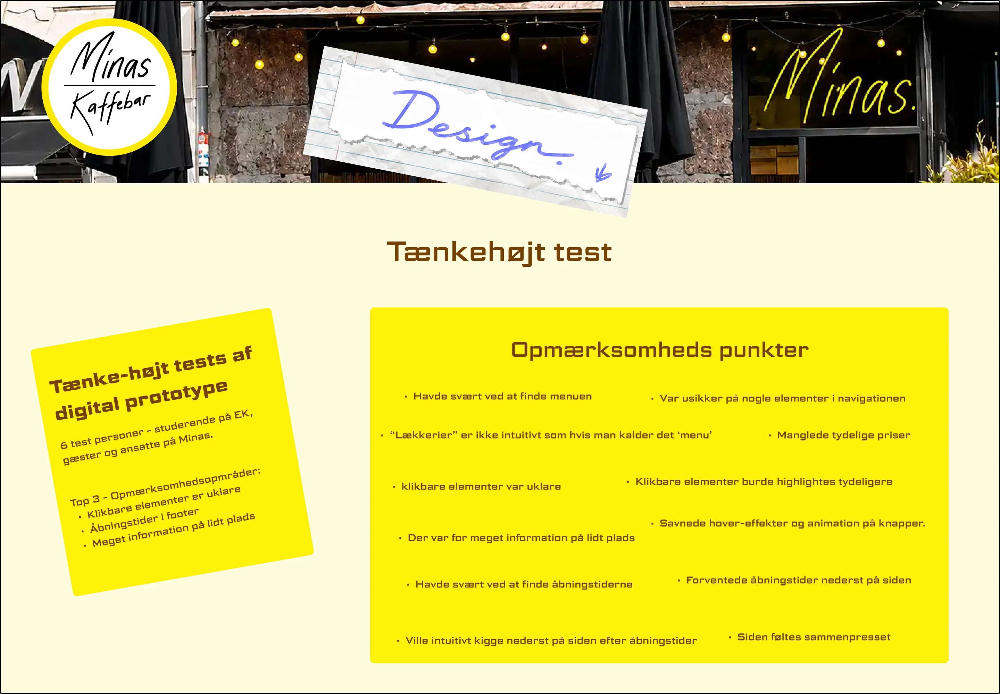
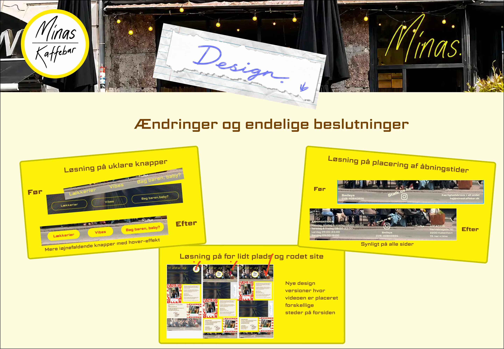
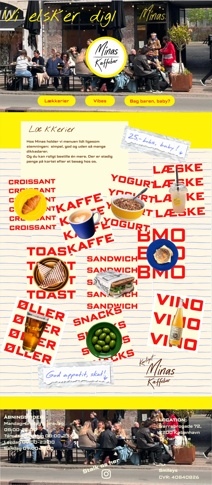

Projekter
05 Indhold
Redesign af Minas


Løsning
Jeg har i samarbejde med min gruppe, skabt et redesign til Minas Kaffebar med fokus på visuel identitet, brugeroplevelse og relevant indhold. Projektet omfattede både produktion af video, billeder og tekst samt udvikling af en responsiv hjemmeside baseret på research, analyser og brugertests. Resultatet blev et gennemarbejdet website, der afspejler Minas’ stemning, værdier og målgruppe.








Proces
Vi startede temaet med planlægning af indholdsproduktion, storytelling, storyboard og videooptagelser samt klipning af vores video, i vores tilfælde om kaffe. Vi brugte en del tid på Scrum og planlægning, uddeligering af opgaver og løbende status på hvor langt vi var, for at bruge tiden mest fornuftigt. Vi syntes at Minas Kaffebar var et oplagt emne, da deres nuværende site var mangelfuld. Derfor arbejdede vi med en spændende research gennem brugertests, observationer, interviews og utallige besøg hos Minas Kaffebar. På baggrund af vores analyser udviklede vi moodboards, styletile, wireframes og digitale prototyper, som løbende blev testet og forbedret. Projektet blev afsluttet med kodning, dokumentation, publicering via GitHub og en præsentation.
Reflektion
Projektet gav mig stor forståelse for vigtigheden af planlægning, fokus på samarbejde og løbende kommunikation i et gruppeprojekt. Jeg erfarede samtidig, at arbejdsfordeling efter kompetencer kan styrke det færdige resultat, men også begrænse den individuelle læring på enkelte områder som fx. udvikling af videoindhold i mit tilfælde. Projektet viste mig også, hvordan en dybdegående brainstorm, research, og især løbende brugertests spiller en afgørende rolle i udviklingen af et stærkt og brugervenligt website. Vores moodboard og styletile blev en vigtigt faktor og den røde tråd for gruppen og et sammenhængende site, da det var den vi lænede os op af til udvikling og indholdsproduktion af sitet. Indenfor kodning lærte jeg især 3 ting; god struktur, hvordan man implementerer en video samt måden man koder collage stil som vi arbejdede en del med. Vi oplevede en del udfordringer med Github, main og branches undervejs, som gjorde os frustrerende.